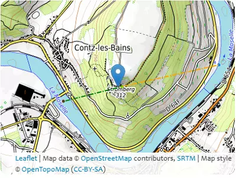

Eurocodes Zoning
PV Shelters
Eurocodes Zoning
PV Shelters
c
0
A
c
A
i
Maps&Directions
Eurocodes Zoning

6.3473
°
, 49.4484
°
6.356
°
, 49.4498
°
6.356
°
, 49.4498
°
6.3703
°
, 49.4519
°
149
m
285
m
285
m
145
m
H
136
m
140
m
L
u
/ L
d
650.1
m
1061.6
m
Φ
20.9
%
13.2
%
x
47.8
m
275
m